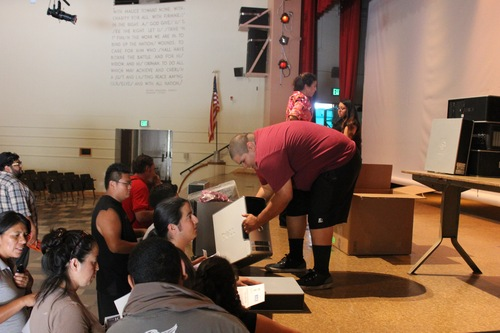
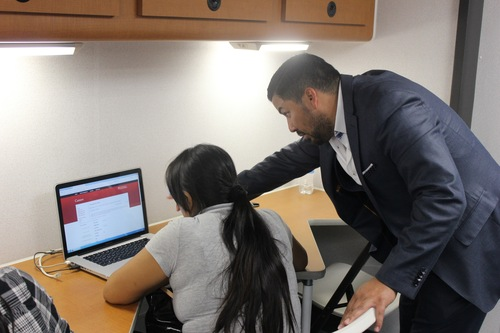

USC Health Sciences Campus JOBS AWARENESS Event
The USC Health Sciences Campus Office of Community Partnerships launched a USC jobs awareness fair aimed at building awareness about available jobs at USC, in June at Abraham Lincoln High School.he USC HSC Office of Community Partnerships partnered with the Lincoln Heights Neighborhood Council, City View Terrace Homeowners Association, The Lincoln Heights Chamber of Commerce, Educare Foundation, and the Southeast Community Development Corporation for the event which attracted over 100 attendees.
A mobile van equipped with computers was stationed at Lincoln High School. Students from Lincoln High School and Sacred Heart also attended the event. It was terrific way to expand students’ horizons about the variety of jobs in the community and provide an easy opportunity for networking, and a unique opportunity to gain experience in job searching.
